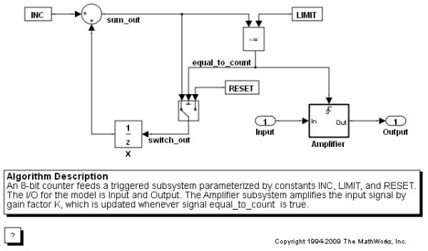
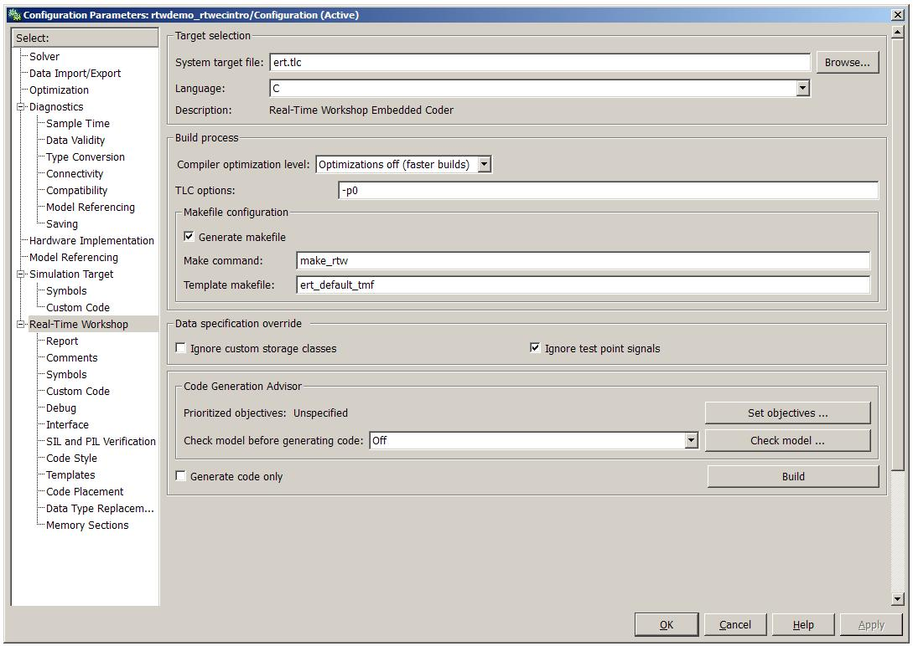
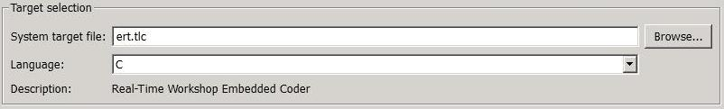
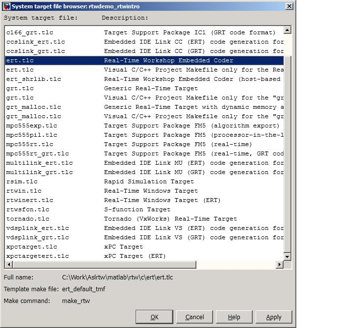
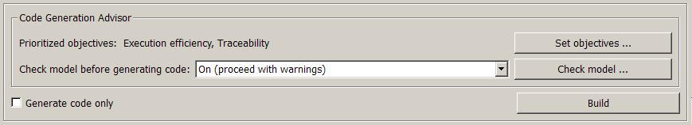
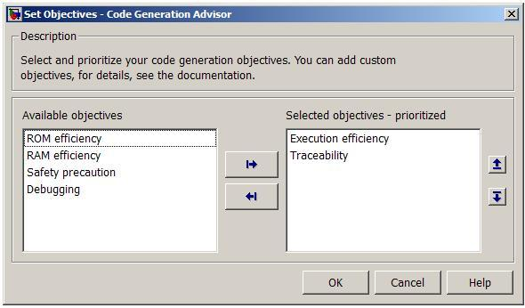
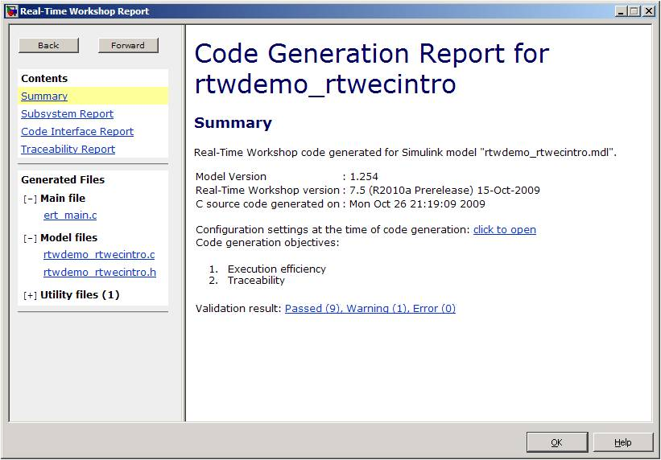

Generating Code Using the Real-Time Workshop Embedded Coder Product
This demonstration shows you how to generate C code for embedded systems requiring production code efficiency and quality.
You select a Real-Time Workshop Embedded Coder target for a model, quickly configure options based on your code generation objectives, generate code, and view the resulting files.
Contents
Open a Model
Open a simple counter model by typing the following MATLAB commands:
model='rtwdemo_rtwecintro';
open_system(model)
 Selecting an Embedded Code Target
You can configure the Real-Time Workshop Embedded Coder software to generate code for one of a variety of targets using code generation options and parameters. The options and parameters are consolidated in the configuration set of the model, which you can view in the standalone Configuration Parameters dialog box or in the Simulink Model Explorer.
Launch the stand-alone model Configuration Parameters dialog box from the model Simulation menu, or by typing the following MATLAB commands:
cs = getActiveConfigSet(model); openDialog(cs);

In the Configuration Parameters > Real-Time Workshop pane, click Browse to view the list of available targets installed on your computer and select the ert.tlc target.


Configuring Code Generation Options Based on High-Level Objectives
The Embedded Real-Time (ERT) target includes a utility to quickly specify and prioritize code generation settings based on your objectives, such as Execution efficiency, ROM efficiency, RAM efficiency, Traceability, Safety precaution, and Debugging. Once specified, you run the utility to establish settings and identify changes based on the objectives. You can check whether the model meets your objectives by clicking Check model, or check the model during the code generation build process by setting Check model before generating code to On. The checks are provided within the Simulink Model Advisor.

For example, to obtain generated code that is traceable and executes efficiently, specify Execution efficiency, Traceability, and then click OK.

In this example, Check model before generating code is set to On (proceed with warnings), which means that the Real-Time Workshop Embedded Coder software reports the appropriate model settings and configuration to best achieve Execution efficiency and Traceability when you either click Check model or generate code.
Generating Code and Viewing the Artifacts
Click Build to generate code. After code generation is complete, a detailed code generation report opens. The report includes links to the generated code and associated artifacts, including:
- Source code and header files
- Code interface report (global data and functions)
- Traceability report (accounting for all the objects in the model)
- Validation report (result of the code generation objective checks)

Consider this process to be a first-pass effort based on high-level objectives. See rtwdemo_configuration_set for a more detailed and programmatic approach to specifying and locking down your code generation settings for a production environment.